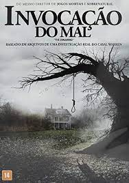
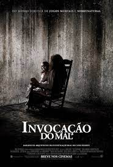

Inspirado em fatos reais, Invocação do Mal conta a história de uma família com cinco crianças, vivendo numa casa de fazenda nos anos 70, que começa a enfrentar aparições assustadoras e decide contratar dois investigadores paranormais.
James Wan
